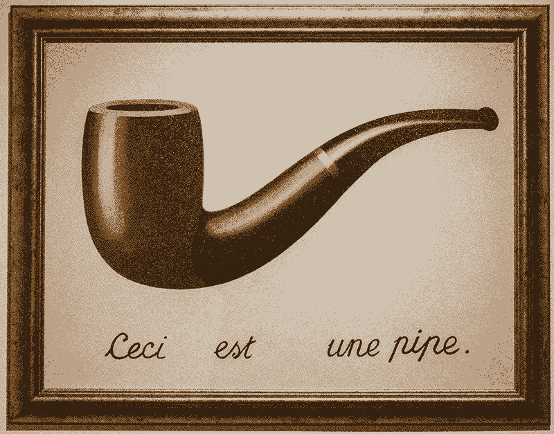
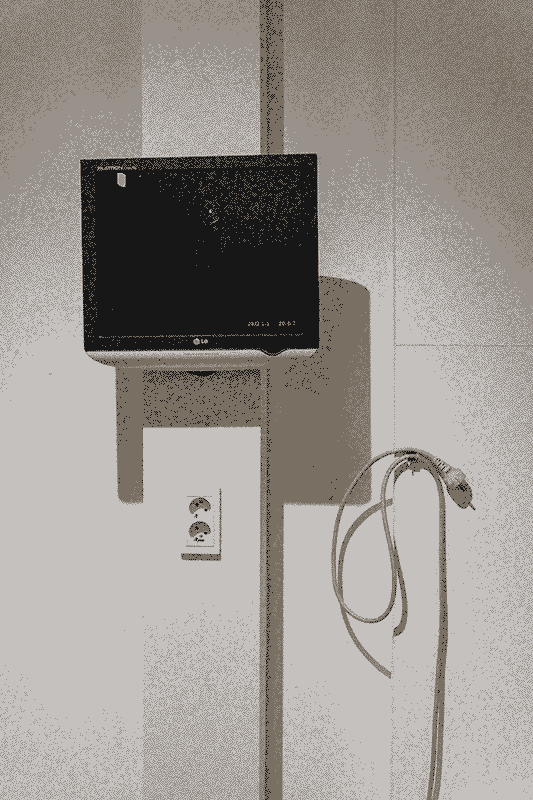
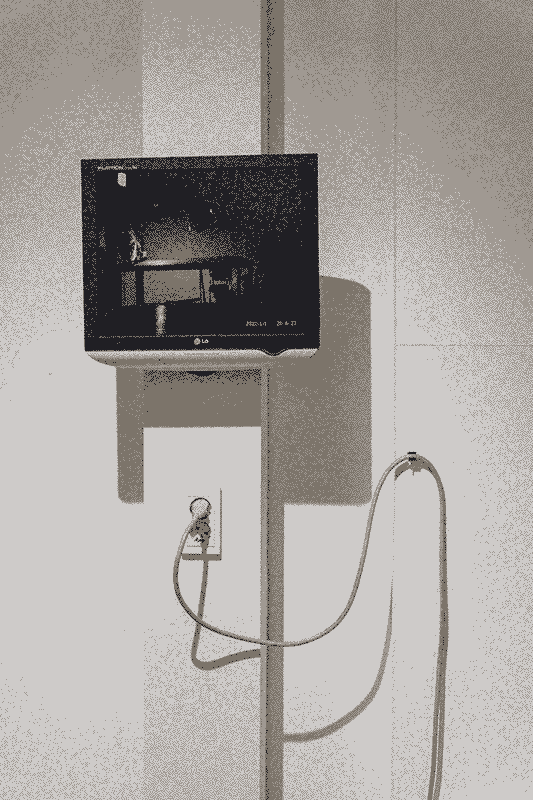

<(this time) I'm literally lying, please believe me.>
Period : December 26, 2021 ~ January 10, 2022
Venue : Pado (198 Seongmisan-ro, Mapo-gu, Seoul)
Seongjoo Moon Solo Exhibition
In René Magritte's 1929 painting, <The Betrayal of Images (La trahison des images)>, the Belgian surrealist
painter juxtaposes a picture of a pipe with the sentence "This is not a pipe (Ceci n'est pas une pipe)". Art has
always relied to some extent on lies, such as saying "This is a pipe Ceci est une pipe" in relation to a picture
of a pipe, and the audience accepts, believes, and agrees with this lie. It is through this process of believing
the lie that art acquires meaning.
Art follows many of the same institutional frameworks as these lies. For example, animals are not allowed in art
exhibitions, and the exhibition space is made up of white walls on all sides. A barrier is placed in front of
the artwork to prevent people from touching it, and small text next to the artwork must contain the title of the
work, the artist's name, and information about the work. Some of these institutional frameworks are clearly
perceived, some are less clearly perceived, and some are not perceived at all.
This exhibition is an exhibition of lies. Some of these lies will be clearly perceived, others will hide
themselves and may not be easily detected. And the viewer will be able to believe or doubt the lies they
discover.
<Le Retour des images>
Printed image on canvas, 60*80 cm, 2021
original file size : 1.5mb

<For the exhibition>
Wires from an artist's studio to the Pado, outlets, plugs, and CCTV video from the Studio. Dimensions unmeasurable, 2021
original file size : 1.7mb

original file size : 1.5mb
